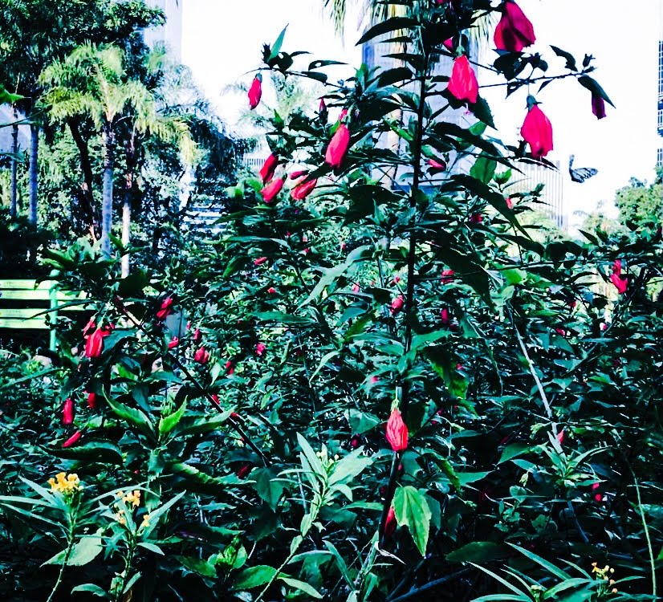

Discovery Park, Seattle

Strait of Juan de Fuca, Victoria

West Kowloon Station, Hong Kong

House special braised pork belly, Rice Yummy, Rosemead

Butterfly, Hong Kong Park, Hong Kong

Beef brisket, Kang Ho Dong Baekjong, Irvine

A promise to return right before jumping off the cliff, Mazatlan

Hudson River, Weehawken

Chestnut shaved ice, Via Tokyo, Hong Kong

Matcha cake, Via Tokyo, Hong Kong

Wedding Steps, Willow Pond Bed and Breakfast, Weyauwega